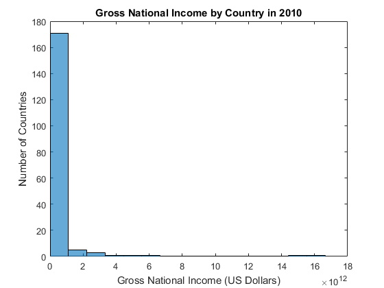
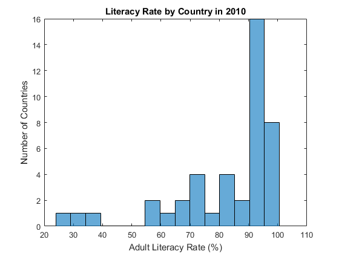
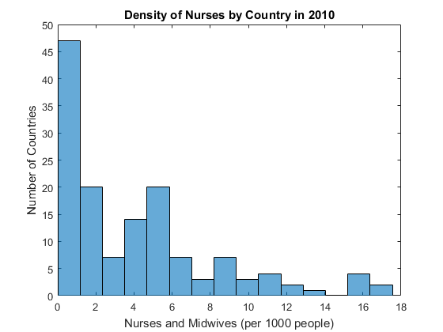
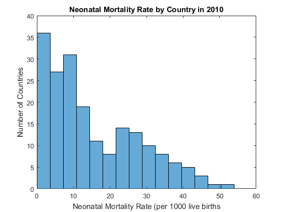
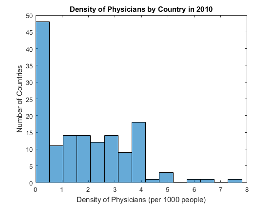
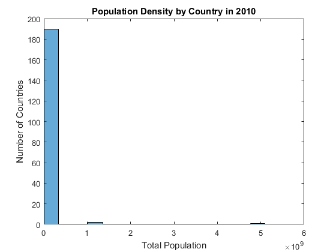
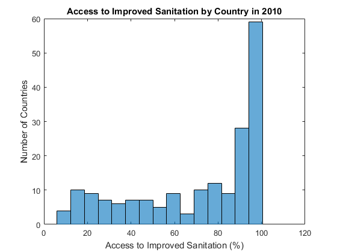
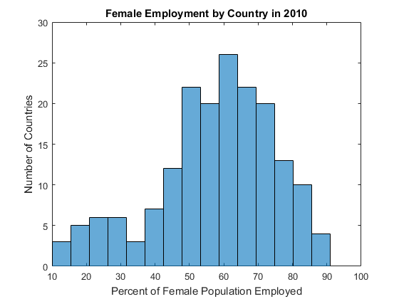

%Tamar Feldman, Biol419, Interim Report 03.03.16 %I pulled the datasets I want to work with into Matlab. There were %immediately apparent issues with the data, some of which I have already %addressed. Firstly, the World Bank includes data for groupings of %countries without a simple way of sorting them from the list of countries. % I removed these by hand as well as the empty rows for certain small % states like Aruba and American Samoa. Secondly, there are large gaps in % the data that vary between countries and between datasets. I have not % yet decided how to handle these discrepencies without misrepresenting the % data. Currently, I am considering choosing a 5 year range to average % available values over. I could also try to identify which years have the % most complete data across all the indicators and include only those years % in my analysis. Another approach would be to identify countries that % have the most complete data for analysis. This approach would need to be % done carefully because countries with better health usually have the most % complete data. I might loose subtleties in the data if the countries % aren't representative of the distribution in each indicator. %I chose to visualize the data by simply creating histograms for the data %in 2010 to get a prelimary feel for the distributions. I would like my %analysis to either span several years or look at how change in the %indicators from year to year is reflected in change in neonatal mortality. %I will also need to consider how indicators with clear outliers, like %population density and GNI, should be analyzed. There might also be some %interesting geographical trends that I would like to explore. I think that %I might find some indicators to be better predictors in one region versus %another. Displaying the data by region could yield insight on this. %Reading in data http://data.worldbank.org/indicator/SH.STA.ACSN SanitationData = readtable('SanitationData.xls'); %http://data.worldbank.org/indicator/SE.ADT.LITR.ZS LiteracyRate = readtable('LiteractyRate.xls'); %http://data.worldbank.org/indicator/SP.POP.TOTL PopulationData = readtable('PopulationData.xls'); %http://data.worldbank.org/indicator/NY.GNP.ATLS.CD GniData = readtable('GNIData.xls'); %http://data.worldbank.org/indicator/SH.DYN.NMRT NeonatalMortality = readtable('NeonatalMortality.xls'); WomenEmployed = readtable('WomenEmployed.xls'); PhysDensity = readtable('PhysicianDensity.xls'); NursDensity = readtable('NursesDensity.xls');
Warning: Variable names were modified to make them valid MATLAB identifiers. Warning: Variable names were modified to make them valid MATLAB identifiers. Warning: Variable names were modified to make them valid MATLAB identifiers. Warning: Variable names were modified to make them valid MATLAB identifiers. Warning: Variable names were modified to make them valid MATLAB identifiers. Warning: Variable names were modified to make them valid MATLAB identifiers. Warning: Variable names were modified to make them valid MATLAB identifiers. Warning: Variable names were modified to make them valid MATLAB identifiers.
%Certain countries appear to have no World Bank data. These seem to be %mostly small island nations or other countries with a very small %population. This code identifies them and removes them from the analysis. %Neonatal Mortality %columns 35-60 if all are empty years = 1960:2015; yearsStr = {}; for i = 1:numel(years), yearsStr{i} = strcat('x',num2str(years(i))); end temp = []; for i = 1:248, sum = 0; for j = 1:56, if isnan(NeonatalMortality{i,yearsStr(j)}) == 1, sum = sum+1; end end if sum == 56, temp = [temp i]; end end %Identify by hand data for groupings of countries temp = [temp 6 35 47 59 60 61 62 65 70 71 91 94 120 126 127 128 131 132 ... 144 152 161 168 172 173 175 187 193 204 206 207 232 242]; temp = sort(temp); temp = unique(temp); countries = NeonatalMortality(temp,'CountryCode'); EditNM = NeonatalMortality; EditGNI = GniData; EditLR = LiteracyRate; EditND = NursDensity; EditPD = PhysDensity; EditPop = PopulationData; EditSan = SanitationData; EditWE = WomenEmployed; %Remove countries without data or rows for groupings of countries EditNM(temp,:) = []; EditGNI(temp,:) = []; EditLR(temp,:) = []; EditND(temp,:) = []; EditPD(temp,:) = []; EditPop(temp,:) = []; EditSan(temp,:) = []; EditWE(temp,:) = [];
EditedData = {EditGNI, EditLR, EditND, EditNM, EditPD, ... EditPop, EditSan, EditWE}; for i = 1:numel(EditedData), [m n] = size(EditedData{i}); for j = 31:56, for k = 1:m, if isnan(EditedData{i{m,yearsStr{j}}} == 1,
EditedData = {EditGNI, EditLR, EditND, EditNM, EditPD, ...
EditPop, EditSan, EditWE};
Titles = {'Gross National Income by Country in 2010','Literacy Rate by Country in 2010', ...
'Density of Nurses by Country in 2010', 'Neonatal Mortality Rate by Country in 2010',...
'Density of Physicians by Country in 2010','Population Density by Country in 2010',...
'Access to Improved Sanitation by Country in 2010'...
'Female Employment by Country in 2010'};
XLabels = {'Gross National Income (US Dollars)','Adult Literacy Rate (%)',...
'Nurses and Midwives (per 1000 people)','Neonatal Mortality Rate (per 1000 live births',...
'Density of Physicians (per 1000 people)','Total Population','Access to Improved Sanitation (%)'...
'Percent of Female Population Employed'};
for i = 1:numel(EditedData),
figure;
x = EditedData{i};
histogram(x{:,'x2010'},15);
title(Titles{i});
xlabel(XLabels{i});
ylabel('Number of Countries');
end
       